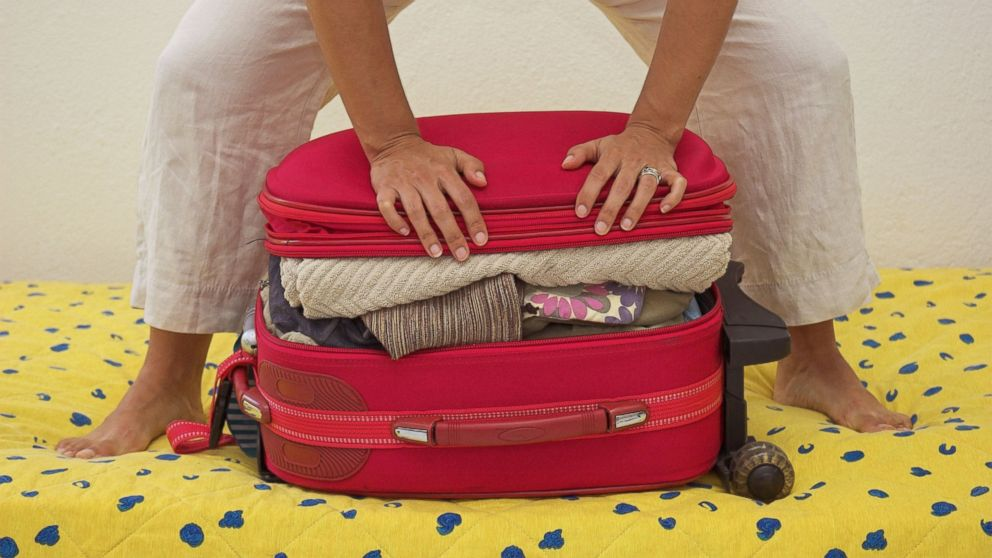
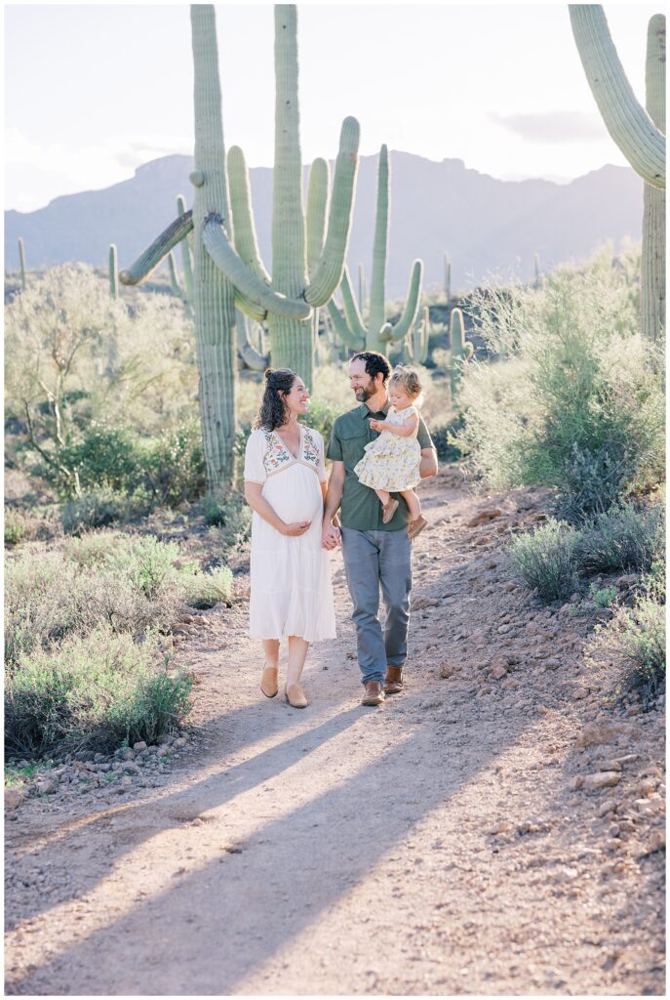

FCE 2026 - Test 1
Reading and Use of English (75 minutes)
Listening (about 40 minutes)
Each recording is played twice. Use headphones and read the questions before you listen.
Writing (80 minutes)
Part 1 - Essay (compulsory)
In your English class you have been discussing the best ways to learn new skills. Your teacher has asked you to write an essay for homework.
Write an essay using all the notes and giving reasons for your point of view.
Notes:
Write about:
1. the cost and time involved
2. understanding the theory vs doing the job
3. ___________ (your own idea)
Write your essay in 140 - 190 words.
Part 2 - Choose ONE task
Write an answer to one of the questions (a - c) in this part. Write your answer in 140 - 190 words in an appropriate style.
(a) Article: You see this announcement on an international student website: Festivals Around the World! We want to know about a great festival in your country. Write an article describing the festival, what people do during it, and why a visitor would enjoy it.
(b) Email: Your English-speaking friend Alex is coming to study at a university in your town next month. Write an email to Alex offering advice on the best areas to look for accommodation, how to travel around town, and tips for making new friends.
(c) Review: A new cafe has recently opened in your area and you visited it last weekend. Write a review for a local magazine. Describe the atmosphere and the food, and say whether you would recommend it to people looking for a place to study or work.
Sending opens your email app with your text. Very long texts are copied to the clipboard so you can paste them.
Speaking (14 minutes)
Practise with a partner or teacher. The real test lasts about 14 minutes.
Part 1 - Interview (2 minutes)
- Where are you from, and what do you like about your hometown?
- What does your typical daily routine look like?
- What are your main hobbies or interests outside of work or study?
- What plans do you have for your future career or education?
Part 2 - Long turn (1 minute each)
Candidate A: Compare the pictures and say how the people might be feeling about their journey.
Candidate B: Compare the pictures and say what people might enjoy about spending time in these environments.
Candidate A's pictures: Travelling and Packing
Compare the pictures and say how the people might be feeling about their journey.


Candidate B's pictures: Outdoor Experiences
Compare the pictures and say what people might enjoy about spending time in these environments.

77.jpg)
Part 3 - Collaborative task (3 minutes)
What are the most important things for a successful holiday? Discuss the ideas below, then decide which TWO are the most crucial to get right.
- comfortable accommodation
- a variety of activities to do
- good weather conditions
- high-quality local food
- who your travel companions are
Part 4 - Discussion (4 minutes)
- How does tourism affect the people who live in popular holiday destinations?
- Some people say that 'travel broadens the mind'. Do you agree with this? Why?
- Why do you think more people are choosing 'staycations' (holidaying in their own country) rather than travelling abroad?